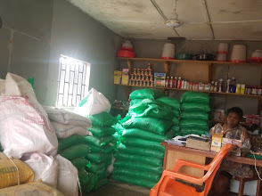
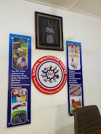

Animal Healthcare
Reliable veterinary products, supplements and guidance for healthier animals.
Providing trusted animal healthcare services, livestock consultation, poultry products, feeds, medications and agricultural expertise.
Reliable veterinary products, supplements and guidance for healthier animals.
Professional advice for symptoms, treatment plans and preventive care.
Day-old chicks, broiler and layer support, vaccines, feed and management tips.
Supply support for farmers starting or scaling poultry production.
Quality feeds for poultry, pets and livestock with ordering through WhatsApp.
Practical livestock care education, farm management and productivity support.



Animal Healthcare Centre serves farmers, pet owners and livestock businesses from Oka, Benin City with dependable products and practical advice.
"Very good customer service and easy to locate close to Third Junction."
"Best place for agro processing in Benin City."
"One stop shop for animal healthcare products."
"Top notch services."
"Best place for your animals health."
"Your pets get all the love and care they deserve."
"Affordable quality feeds and reliable products."
"Customer priority is top-notch."
Book consultation, confirm product availability or place an order directly through WhatsApp.